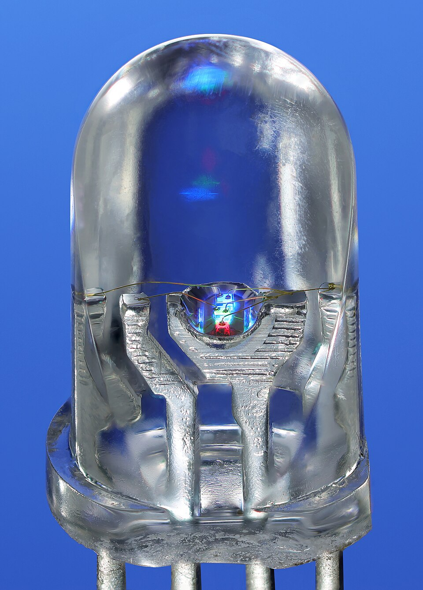
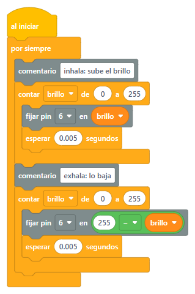

Tu Arduino ya siente el calor y te lo cuenta. Hoy aprende a pintar con luz: un solo LED que puede ser de cualquier color.
Antes de partir
Lo que ya sabemos 🧠
🌡️ Sesión 8: el termómetro
El DHT11 es un sensor de temperatura y humedad; trae sus propios bloques
«si / si no» uno dentro de otro: la pregunta encadenada
Las variables guardan números con coma, como 21.5
Un umbral es la raya que decide qué hacer
🧰 De antes, para hoy
El LED: actuador de luz, con su resistencia de 220 Ω (sesión 3)
«contar» para ir de a uno… y el truco para bajar: 180 − ángulo (sesión 6)
«asignar … del rango … al rango …»: traducir rangos (sesión 6)
El murciélago mide distancia (sesión 7)
Hoy pintamos con luz: un solo LED… de cualquier color 🌈
El actuador de hoy
El LED RGB: tres LEDs en uno 🔴🟢🔵

Se ve blanco… ¡hasta que lo prendes! Foto: Mister rf · CC BY-SA 4.0
Adentro viven tres LEDs chiquitos: uno Rojo, uno Green (verde) y uno Blue (azul). Por eso «RGB».
Tiene cuatro patitas: una por color… y una larga, la +, que comparten los tres.
Si prendes los tres a la vez se mezclan y ves un solo color. ¡Así funcionan las pantallas!
El de tu kit es de ánodo común: la patita larga va a 5V y cada color lleva su resistencia de 220 Ω, como el LED de la sesión 3. Y se prende al revés… ya verás cómo lo arreglamos. 🙃
Pintar con luz
La receta de cada color 🎨
Una idea nueva de programación
Medio encendido: el bloque «fijar pin» ✨
«encender LED» y «apagar LED» solo saben prendido o apagado. Para un LED «a medias» el cerebrito hace trampa: lo prende y apaga tan rápido que tu ojo ve un promedio.
Está en la categoría Avanzado y recibe un número del 0 al 255. Solo los pines con ~ saben hacer este truco (3, 5, 6, 9, 10 y 11). Se llama PWM.
Una idea nueva de programación
Tu propio bloque: «color» 🧩
definir color rgbfijar pin 6 en 255 − rfijar pin 5 en 255 − gfijar pin 3 en 255 − b
comentario naranjocolor 2551200esperar 1 segundos
definir color lo que hace tu bloque; r, g y b son sus entradascolor 255 120 0 un solo bloque por colorcomentario una etiqueta para ti: el Arduino no la lee
¿Por qué 255 − r? Tu LED se prende al revés: con 0 brilla a todo y con 255 se apaga. La resta lo da vuelta, y afuera del bloque piensas al derecho.
¡Manos a la obra!
Los cuatro cables del LED RGB 🔌
Práctica 1
La respiración 🫁

«contar» solo sabe subir: para bajar, el rojo va en 255 − brillo. ¡El truco del servo de la sesión 6! Proyecto: sketches/sesion-09/respiracion/respiracion.bloquino
Práctica 2
La rueda de colores con la perilla 🎛️🌈
rueda asignar leer pin analógico A0 del rango 0 - 1023 al rango 0 - 255
1️⃣ Leer la perilla. «leer pin analógico A0» da un número de 0 a 1023; «asignar» lo traduce de 0 a 255 y se lo pasa al bloque rueda.
2️⃣ La rueda. Otro bloque tuyo, como «color»: «definir rueda (pos)», con una entrada pos. Adentro, dos «si / si no», uno dentro del otro, miran pos, eligen el tramo del arcoíris que le toca y le pasan su mezcla a color.
Gira la perilla despacio: el LED recorre todo el arcoíris. Proyecto: sketches/sesion-09/rueda_perilla/rueda_perilla.bloquino
⭐ Proyecto de la sesión
La lámpara de humor 🪔
Saca la perilla y pon al murciélago: la lámpara cambia de color según lo cerca que esté tu mano.
Armar el LED RGB y el HC-SR04 en la protoboard
Armar los bloques y probarlos con Iniciar simulación: la distancia manda a la rueda
Cargar a la placa y probar: mano pegada = rojo 🔴, a medio camino = verde 🟢, lejos = azul 🔵
Decorar: tápalo con un vaso plástico o papel blanco para que la luz se esparza 🥤
El papel o el vaso es el difusor: el mismo truco de las lámparas de verdad para que no se vea el puntito del LED.
⭐ Reto de la sesión
Elige tu aventura 🎯
Nivel 1: la lámpara respira en tu color favorito (los dos «contar» de la práctica 1, con tu receta)
Nivel 2: modo fiesta 🎉 — cada medio segundo un color al azar: cada entrada de color con un número al azar entre 0 y 255
Nivel experto: el arcoíris automático — que pos suba solito con cambiar pos por 1 y vuelva a 0 al pasar de 255
Demo del profe: un aro de LEDs donde cada lucecita es un LED RGB con su propio cerebrito.
Duelo de cerebritos
¿Cuánto aprendiste? Toca para voltear
¿Qué tres colores viven dentro del LED RGB?
Rojo, verde y azul: Red, Green, Blue 🔴🟢🔵
¿Qué hace «fijar pin 6 en 128»?
Prende el pin 6 «a la mitad»: lo prende y apaga rapidísimo ✨
¿Rojo + verde, con luz?
¡Amarillo! La luz se suma, no se ensucia como la témpera 💛
«contar» solo sube: ¿cómo bajas el brillo?
Fijando el pin en 255 − brillo: cuando brillo sube, eso baja 🔽
¿Por qué tu bloque «color» hace 255 − r?
Porque tu LED es de ánodo común y se prende al revés: la resta lo da vuelta 🙃
Lo lograste
¡Tu Arduino pinta con luz! 🎉
Hoy mezclaste colores, prendiste luces a medias… y tu pieza tiene una lámpara de humor hecha por ti. 🪔
Próxima sesión 🚂
El gran proyecto final: un paso a nivel de tren con luces, alarma y barrera. ¡Todo lo que aprendiste, junto!